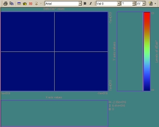

The Display Viewer window depicts distribution data files in
either 2D or 3D. It creates plots of ray spots and controls contours, palettes,
pointers, and labeling. Options described in this topic enhance the data
viewing.

The 3D feature lets you view portions (or slices of data from an
oblique angle. It gives visual height information of pixels, rather than only
the 2D, flat view. The 2D view must be active before you can select the slice,
value, and view from the toolbar.